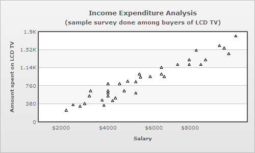
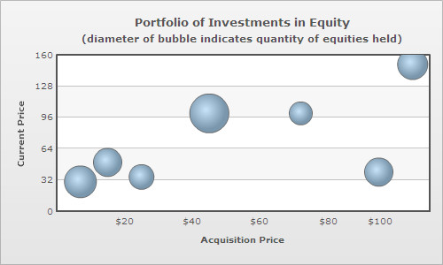
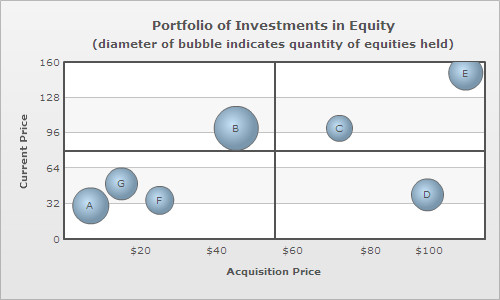
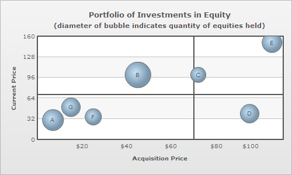
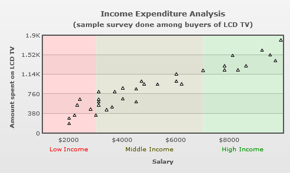
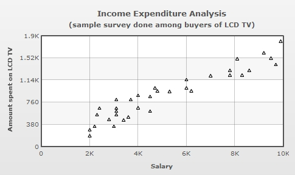
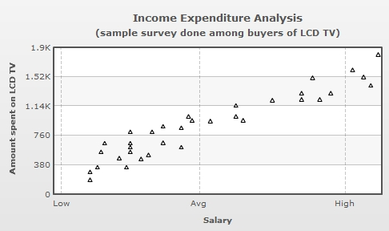
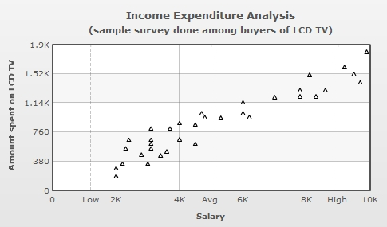
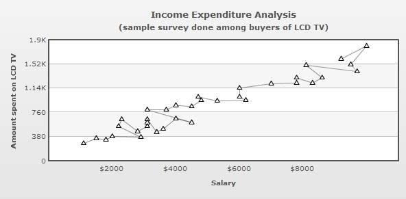
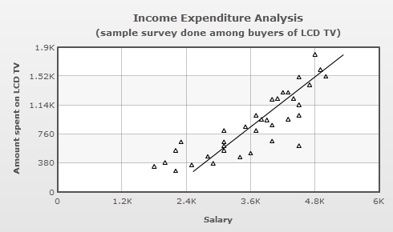

| XML/JSON Attributes for Scatter and Bubble Charts | ||||||||||||||||||||||||||||||||||||||||||||||||||||||||||||||||||||||||||||||||||||||||||||||||||||||||||||||||||||||||||||||||
Bubble and scatter charts are used for plotting data that can be defined in terms of multiple numeric parameters. In these charts, both X and Y axes are numeric. So, the position of a data point is an indicator of two distinct numeric values. The scatter chart is used for plotting data which is defined in terms of two numeric parameters.  Scatter charts are multi-series charts, but their data format is slightly different from that of conventional multi-series charts. Following is the data for the above chart: <chart caption='Income Expenditure Analysis' subcaption='(sample survey done among buyers of LCD TV)'
xAxisName='Salary' yAxisName='Amount spent on LCD TV'>
<categories>
<category x='0' />
<category label='$2000' x='2000' />
<category label='$4000' x='4000' />
<category label='$6000' x='6000' />
<category label='$8000' x='8000' />
<category x='10000'/>
</categories>
<dataset color='000000'>
<set x='2500' y='350' />
<set x='2200' y='240' />
<set x='3000' y='380' />
<set x='2800' y='325' />
<set x='3250' y='650' />
<set x='3200' y='541' />
. . .
</dataset>
</chart>
{
"chart":{
"caption":"Income Expenditure Analysis",
"subcaption":"(sample survey done among buyers of LCD TV)",
"xaxisname":"Salary",
"yaxisname":"Amount spent on LCD TV"
},
"categories":[{
"category":[{
"x":"0"
},
{
"name":"$2000",
"x":"2000"
},
{
"name":"$4000",
"x":"4000"
},
{
"name":"$6000",
"x":"6000"
},
{
"name":"$8000",
"x":"8000"
},
{
"x":"10000"
}
]
}
],
"dataset":[{
"color":"000000",
"data":[{
"x":"2500",
"y":"350"
},
{
"x":"2200",
"y":"240"
},
{
"x":"3000",
"y":"380"
},
{
"x":"2800",
"y":"325"
},
{
"x":"3250",
"y":"650"
},
{
"x":"3200",
"y":"541"
}
]
}
]
...
}
The bubble chart is used for plotting data, which is defined in terms of three numeric parameters. The third numeric parameter is indicated by the diameter of the bubble.  The XML/JSON format of a bubble chart is slightly different from that of a scatter chart, this is because the bubble chart plots an additional numeric parameter. Following is the data for the above chart: <chart caption='Portfolio of Investments in Equity'
subcaption='(diameter of bubble indicates quantity of equities held)'
xAxisName='Acquisition Price' yAxisName='Current Price' >
<categories>
<category x='0' />
<category label='$20' x='20' />
<category label='$40' x='40' />
<category label='$60' x='60' />
<category label='$80' x='80' />
<category label='$100' x='100' />
<category x='120' />
</categories>
<dataset>
<set x='7' y='30' z='1000' name='A' />
<set x='45' y='100' z='1500' name='B' />
<set x='72' y='100' z='500' name='C' />
<set x='95' y='40' z='800' name='D' />
<set x='105' y='150' z='900' name='E' />
<set x='25' y='35' z='600' name='F' />
<set x='15' y='50' z='800' name='G' />
</dataset>
</chart>
{
"chart":{
"caption":"Portfolio of Investments in Equities",
"subcaption":"(diameter of bubble indicates quantity of equities held)",
"xaxisname":"Acquisition Price",
"yaxisname":"Current Price"
},
"categories":[{
"category":[{
"x":"0"
},
{
"label":"$20",
"x":"20"
},
{
"label":"$40",
"x":"40"
},
{
"label":"$60",
"x":"60"
},
{
"label":"$80",
"x":"80"
},
{
"label":"$100",
"x":"100"
},
{
"x":"120"
}
]
}
],
"dataset":[{
"data":[{
"x":"7",
"y":"30",
"z":"1000",
"name":"A"
},
{
"x":"45",
"y":"100",
"z":"1500",
"name":"B"
},
{
"x":"72",
"y":"100",
"z":"500",
"name":"C"
},
{
"x":"95",
"y":"40",
"z":"800",
"name":"D"
},
{
"x":"105",
"y":"150",
"z":"900",
"name":"E"
},
{
"x":"25",
"y":"35",
"z":"600",
"name":"F"
},
{
"x":"15",
"y":"50",
"z":"800",
"name":"G"
}
]
}
]
}
In case of bubble and scatter charts categories are optional, since the X axis is numeric. So, categories can be used to define customized X axis labels at any location in the X scale. A category can define numeric or non-numeric labels for the X axis. Unlike other multi-series charts where each dataset contains the same number of <set> elements as the number of categories, scatter and bubble charts can have varying number of <set> elements under each dataset. In case categories are not defined, the X axis displays an automatically calculated numeric scale with vertical divisional lines and values of the divisional lines as X axis labels. However, you can also explicitly define categories of your choice and show only those categories as X axis labels. Moreover, you can also combine the categories and automatically generated X axis labels using a mixed mode. Read Configuring the X axis labels of bubble/scatter charts to learn more on how to use these modes. |
||||||||||||||||||||||||||||||||||||||||||||||||||||||||||||||||||||||||||||||||||||||||||||||||||||||||||||||||||||||||||||||||
| Displaying labels on bubbles | ||||||||||||||||||||||||||||||||||||||||||||||||||||||||||||||||||||||||||||||||||||||||||||||||||||||||||||||||||||||||||||||||
Labels can be displayed on each bubble of a bubble chart. For this, however, every <set> element must be allotted a label or an identifier using name attribute: <set x='45' y='100' z='1500' name='B' /> To make the labels visible over the bubbles, showValues attribute must be declared in the <chart> element: <chart showValues='1' . . . /> |
||||||||||||||||||||||||||||||||||||||||||||||||||||||||||||||||||||||||||||||||||||||||||||||||||||||||||||||||||||||||||||||||
| Drawing quadrants on bubble and scatter charts | ||||||||||||||||||||||||||||||||||||||||||||||||||||||||||||||||||||||||||||||||||||||||||||||||||||||||||||||||||||||||||||||||
Dividing the canvas of a bubble/scatter chart into quadrants makes analysis of the chart easier. Quadrant lines can be added to the chart by declaring drawQuadrant attribute of the <chart> element. <chart drawQuadrant='1' . . . > |
||||||||||||||||||||||||||||||||||||||||||||||||||||||||||||||||||||||||||||||||||||||||||||||||||||||||||||||||||||||||||||||||
 By default, the quadrant lines appear at the center of the canvas, but their position can be customized using quadrantXVal and quadrantYVal attributes. quadrantXVal sets the position of the vertical quadrant line relative to the X axis and quadrantYVal sets the position of the horizontal quadrant line relative to the Y axis. The value of these attributes must be within the range of their corresponding relative axis (and not pixels). In the chart above, since both X and Y axis ranges from 0-120, the following data is used to customize the position of the quadrant lines: <chart quadrantXVal='70' quadrantYVal='70' . . . > |
||||||||||||||||||||||||||||||||||||||||||||||||||||||||||||||||||||||||||||||||||||||||||||||||||||||||||||||||||||||||||||||||
 Each quadrant can have its own title in the form of a label. The attributes for defining labels for the upper quadrants are quadrantLabelTL and quadrantLabelTR (TL for top-left and TR for top-right quadrant). Similarly, the attributes for defining the labels for the lower quadrants are quadrantLabelBL and quadrantLabelBR (BL for bottom-left and BR for bottom-right quadrant). <chart quadrantLabelTL='Good' quadrantLabelTR='Moderate' quadrantLabelBL='Stagnant' quadrantLabelBR='Bad' . . . > |
||||||||||||||||||||||||||||||||||||||||||||||||||||||||||||||||||||||||||||||||||||||||||||||||||||||||||||||||||||||||||||||||
|
Customization of quadrant lines and labels can be done using following attributes:
|
||||||||||||||||||||||||||||||||||||||||||||||||||||||||||||||||||||||||||||||||||||||||||||||||||||||||||||||||||||||||||||||||
| Segmenting the X axis of bubble/scatter charts into categorical zones | ||||||||||||||||||||||||||||||||||||||||||||||||||||||||||||||||||||||||||||||||||||||||||||||||||||||||||||||||||||||||||||||||
The X-axis of bubble/scatter chart can be segmented into categorical zones using vertical trend lines. Segmentation of the X-axis is done in the following manner:
<vTrendLines>
<line startValue='1000' endValue='3000' displayValue='Low Income' isTrendZone='1' color='FF0000' alpha='5'/>
<line startValue='3000' endValue='7000' displayValue='Middle Income' isTrendZone='1' color='5B5B00' alpha='5'/>
<line startValue='7000' endValue='10000' displayValue='High Income' isTrendZone='1' color='009900' alpha='5'/>
</vTrendLines>
"vtrendlines":[{
"line":[{
"startvalue":"1000",
"endvalue":"3000",
"displayvalue":"Low Income",
"istrendzone":"1",
"color":"FF0000",
"alpha":"5"
},
{
"startvalue":"3000",
"endvalue":"7000",
"displayvalue":"Middle Income",
"istrendzone":"1",
"color":"5B5B00",
"alpha":"5"
},
{
"startvalue":"7000",
"endvalue":"10000",
"displayvalue":"High Income",
"istrendzone":"1",
"color":"009900",
"alpha":"5"
}
]
}
]
|
||||||||||||||||||||||||||||||||||||||||||||||||||||||||||||||||||||||||||||||||||||||||||||||||||||||||||||||||||||||||||||||||
| Configuring the X axis labels of bubble/scatter charts | ||||||||||||||||||||||||||||||||||||||||||||||||||||||||||||||||||||||||||||||||||||||||||||||||||||||||||||||||||||||||||||||||
Starting FusionCharts XT, you can configure the display mode of the x-axis labels in scatter and bubble charts. You can either choose to make the chart automatically generate the X Axis labels along with vertical divisional lines or you can explicitly define each X Axis label. Additionally, you can also opt to mix these two modes. The attribute which takes care of these modes is xAxisLabelMode. There are three different modes in which you can display the x-axis labels. These are as follows:
In the section below, we will learn how to apply any of these modes. |
||||||||||||||||||||||||||||||||||||||||||||||||||||||||||||||||||||||||||||||||||||||||||||||||||||||||||||||||||||||||||||||||
| Let's apply the same example of scatter chart which is provided at the beginning of this page. | ||||||||||||||||||||||||||||||||||||||||||||||||||||||||||||||||||||||||||||||||||||||||||||||||||||||||||||||||||||||||||||||||
Auto mode: (xAxisLabelMode='auto') |
||||||||||||||||||||||||||||||||||||||||||||||||||||||||||||||||||||||||||||||||||||||||||||||||||||||||||||||||||||||||||||||||
<chart xAxisLabelMode='auto'
caption='Income Expenditure Analysis'
subcaption='(sample survey done among buyers of LCD TV)'
xAxisName='Salary' yAxisName='Amount spent on LCD TV'>
<dataset color='000000'>
<set x='9200' y='1600' />
<set x='9900' y='1800' />
<set x='9500' y='1510' />
<set x='9700' y='1400' />
<set x='8100' y='1500' />
<set x='8600' y='1300' />
<set x='8300' y='1220' />
<set x='7800' y='1300' />
<set x='7800' y='1220' />
<set x='7000' y='1210' />
<set x='6000' y='1140' />
<set x='6000' y='1000' />
<set x='6200' y='950' />
<set x='5300' y='940' />
<set x='4700' y='1000' />
<set x='4800' y='947' />
<set x='4500' y='850' />
<set x='4000' y='870' />
<set x='3700' y='800' />
<set x='3100' y='800' />
<set x='4500' y='600' />
<set x='4000' y='660' />
<set x='3600' y='500' />
<set x='3400' y='450' />
<set x='3100' y='650' />
<set x='3100' y='600' />
<set x='3100' y='540' />
<set x='2800' y='460' />
<set x='2400' y='650' />
<set x='2300' y='540' />
<set x='3000' y='340' />
<set x='2000' y='280' />
<set x='2200' y='340' />
<set x='2000' y='180' />
</dataset>
</chart>
|
||||||||||||||||||||||||||||||||||||||||||||||||||||||||||||||||||||||||||||||||||||||||||||||||||||||||||||||||||||||||||||||||
The chart for the above data will look as under: |
||||||||||||||||||||||||||||||||||||||||||||||||||||||||||||||||||||||||||||||||||||||||||||||||||||||||||||||||||||||||||||||||
| 
Note: In auto mode none of the advanced label management features will be applicable to the X axis labels. In the above chart, you can see that the x-axis labels are automatically calculated and displayed. These x-axis labels are based on x-axis values which in turn are generated using the x values of the chart data. Additionally, along with each label a vertical divisional line is also rendered. You can also configure these vertical divisional lines. Please read Quick Chart Configuration > Div Lines & Grids to know more on how to configure these vertical divisional lines. |
||||||||||||||||||||||||||||||||||||||||||||||||||||||||||||||||||||||||||||||||||||||||||||||||||||||||||||||||||||||||||||||||
| Categories mode: (xAxisLabelMode='categories')
For this example, we have modified the data used in the above sample. We have explicitly added some <category> elements in the data as shown below: |
||||||||||||||||||||||||||||||||||||||||||||||||||||||||||||||||||||||||||||||||||||||||||||||||||||||||||||||||||||||||||||||||
<chart xAxisLabelMode='categories'
caption='Income Expenditure Analysis'
subcaption='(sample survey done among buyers of LCD TV)'
xAxisName='Salary' yAxisName='Amount spent on LCD TV'>
<categories>
<category label='Low' x='1200' showVerticalLine='1' lineDashed='1'/>
<category label='Avg' x='5000' showVerticalLine='1' lineDashed='1'/>
<category label='High' x='9000' showVerticalLine='1' lineDashed='1'/>
</categories>
<dataset color='000000'>
<set x='9200' y='1600' />
<set x='9900' y='1800' />
<set x='9500' y='1510' />
<set x='9700' y='1400' />
<set x='8100' y='1500' />
<set x='8600' y='1300' />
<set x='8300' y='1220' />
<set x='7800' y='1300' />
<set x='7800' y='1220' />
<set x='7000' y='1210' />
<set x='6000' y='1140' />
<set x='6000' y='1000' />
<set x='6200' y='950' />
<set x='5300' y='940' />
<set x='4700' y='1000' />
<set x='4800' y='947' />
<set x='4500' y='850' />
<set x='4000' y='870' />
<set x='3700' y='800' />
<set x='3100' y='800' />
<set x='4500' y='600' />
<set x='4000' y='660' />
<set x='3600' y='500' />
<set x='3400' y='450' />
<set x='3100' y='650' />
<set x='3100' y='600' />
<set x='3100' y='540' />
<set x='2800' y='460' />
<set x='2400' y='650' />
<set x='2300' y='540' />
<set x='3000' y='340' />
<set x='2000' y='280' />
<set x='2200' y='340' />
<set x='2000' y='180' />
</dataset>
</chart>
|
||||||||||||||||||||||||||||||||||||||||||||||||||||||||||||||||||||||||||||||||||||||||||||||||||||||||||||||||||||||||||||||||
The chart for the above data will look as under: |
||||||||||||||||||||||||||||||||||||||||||||||||||||||||||||||||||||||||||||||||||||||||||||||||||||||||||||||||||||||||||||||||
|  | ||||||||||||||||||||||||||||||||||||||||||||||||||||||||||||||||||||||||||||||||||||||||||||||||||||||||||||||||||||||||||||||||
In the above chart, you can see that the labels explicitly defined in the <category> elements within the <categories> element are displayed. Note, that the automatically calculated labels are not displayed. |
||||||||||||||||||||||||||||||||||||||||||||||||||||||||||||||||||||||||||||||||||||||||||||||||||||||||||||||||||||||||||||||||
| Mixed mode:
To display mixed mode, we have set xAxisLabelMode='mixed' in the above data. |
||||||||||||||||||||||||||||||||||||||||||||||||||||||||||||||||||||||||||||||||||||||||||||||||||||||||||||||||||||||||||||||||
<chart caption='Income Expenditure Analysis' xAxisLabelMode='mixed'... > |
||||||||||||||||||||||||||||||||||||||||||||||||||||||||||||||||||||||||||||||||||||||||||||||||||||||||||||||||||||||||||||||||
The chart for the above data will look as under: |
||||||||||||||||||||||||||||||||||||||||||||||||||||||||||||||||||||||||||||||||||||||||||||||||||||||||||||||||||||||||||||||||
|  | ||||||||||||||||||||||||||||||||||||||||||||||||||||||||||||||||||||||||||||||||||||||||||||||||||||||||||||||||||||||||||||||||
In the above chart, you can see that the x-axis displays both automatically calculated labels and the explicitly defined labels through the <category> elements. NOTE: By default, when xAxisLabelMode attribute is not defined and when categories are not explicitly defined in the data, the chart displays X axis labels using auto mode. In case, categories are defined ( and xAxisLabelMode attribute is not defined), the chart switches to categories mode. You can also force any of the above three modes by explicitly defining the mode using the xAxisLabelMode attribute. |
||||||||||||||||||||||||||||||||||||||||||||||||||||||||||||||||||||||||||||||||||||||||||||||||||||||||||||||||||||||||||||||||
| Configuring x-axis vertical divisional lines | ||||||||||||||||||||||||||||||||||||||||||||||||||||||||||||||||||||||||||||||||||||||||||||||||||||||||||||||||||||||||||||||||
| Starting FusionCharts XT, you can configure the vertical divisional lines related to the x-axis. The attributes used are as follows: | ||||||||||||||||||||||||||||||||||||||||||||||||||||||||||||||||||||||||||||||||||||||||||||||||||||||||||||||||||||||||||||||||
|
||||||||||||||||||||||||||||||||||||||||||||||||||||||||||||||||||||||||||||||||||||||||||||||||||||||||||||||||||||||||||||||||
| Number formatting for Scatter and Bubble charts | ||||||||||||||||||||||||||||||||||||||||||||||||||||||||||||||||||||||||||||||||||||||||||||||||||||||||||||||||||||||||||||||||
| Starting FusionCharts XT, you can configure the formatting of the numbers present on the y-axis and x-axis individually. You can also opt to use the same number formatting on both the axes. The attributes used for formatting the numbers are as follows: | ||||||||||||||||||||||||||||||||||||||||||||||||||||||||||||||||||||||||||||||||||||||||||||||||||||||||||||||||||||||||||||||||
| ||||||||||||||||||||||||||||||||||||||||||||||||||||||||||||||||||||||||||||||||||||||||||||||||||||||||||||||||||||||||||||||||
| Connecting scatter plots by a line in XY (Scatter) chart | ||||||||||||||||||||||||||||||||||||||||||||||||||||||||||||||||||||||||||||||||||||||||||||||||||||||||||||||||||||||||||||||||
In scatter charts, all the data points can be connected by a line. This can be done by declaring drawLine attribute of the <dataset> element as under: <dataset drawLine="1" . . . > Following scatter chart shows a line connecting all the data plots of a scatter chart.  |
||||||||||||||||||||||||||||||||||||||||||||||||||||||||||||||||||||||||||||||||||||||||||||||||||||||||||||||||||||||||||||||||
| Regression Line in Scatter and Bubble charts | ||||||||||||||||||||||||||||||||||||||||||||||||||||||||||||||||||||||||||||||||||||||||||||||||||||||||||||||||||||||||||||||||
Starting FusionCharts XT, scatter and bubble charts can draw regression lines based on the values provided to the charts. In a scatter or a bubble chart, each data point has two distinct numeric values, one (x value) with respect to the X axis and the other (y value) with respect to the Y axis. A regression line shows the trend of the y values with respect to the x values or the trend of the x values with respect to the y values. Hence, a regression line can be used to derive a particular trend from the scattered data points in the chart canvas and predict values accordingly. The regression line is shown as a straight line. Regression line can be used to find trend and predict future sales, stock prices, currency exchange rates, productivity gains resulting from a training program etc. There are several methods to calculate and draw regression lines. The scatter and bubble charts of FusionCharts XT uses Linear Regression and least-squares or least absolute deviation method. This method calculates the best-fitting straight-line for the observed data by minimizing the sum of the squares of the vertical deviations from each data point to the line (if a point lies on the fitted line exactly, then its vertical deviation is 0). Because the deviations are first squared, then summed, there are no cancellations between positive and negative values. To show the regression line you will need to declare showRegressionLine='1' in <chart> or <dataset> element. To display regression lines of all the datasets of a chart you need to declare showRegressionLine='1' in the <chart> element. You can show the regression line for a particular <dataset> element declaring showRegressionLine='1' in that particular <dataset> element. |
||||||||||||||||||||||||||||||||||||||||||||||||||||||||||||||||||||||||||||||||||||||||||||||||||||||||||||||||||||||||||||||||
<chart showRegressionLine="1" . . . > |
||||||||||||||||||||||||||||||||||||||||||||||||||||||||||||||||||||||||||||||||||||||||||||||||||||||||||||||||||||||||||||||||
| or | ||||||||||||||||||||||||||||||||||||||||||||||||||||||||||||||||||||||||||||||||||||||||||||||||||||||||||||||||||||||||||||||||
<dataset showRegressionLine="1" . . . > |
||||||||||||||||||||||||||||||||||||||||||||||||||||||||||||||||||||||||||||||||||||||||||||||||||||||||||||||||||||||||||||||||
Following scatter chart shows a regression line: |
||||||||||||||||||||||||||||||||||||||||||||||||||||||||||||||||||||||||||||||||||||||||||||||||||||||||||||||||||||||||||||||||
| Modes of Regression | ||||||||||||||||||||||||||||||||||||||||||||||||||||||||||||||||||||||||||||||||||||||||||||||||||||||||||||||||||||||||||||||||
|
The chart uses one of the two modes to display a regression line:
By default, scatter and bubble charts use Y on X mode to draw the regression lines. However, you can select the X on Y mode setting showYOnX = '0' in <chart> or <dataset> element.
The formulae used to draw the regression lines for both the modes are given below:
Y on X – The regression equation of Y on X is the equation of the best fitting straight line in the form y= a+bx, where x is the explanatory variable and y is the dependent variable. When, b = ( n . Σ (x.y) - (Σ x).(Σ y) )/ (n Σx² – (Σx)² ) X on Y - The regression equation of X on Y is the equation of the best fitting straight line in the form x= a+by, where y is the explanatory variable and x is the dependent variable. When, b = ( n . Σ (x.y) - (Σ x).(Σ y) )/ (n Σy² – (Σy)² ) A chart shown below draws a regression line to show the trend of the amount spent on LCD TV (y values) with relation to buyer's salary brackets (x value). Hence, this is using Y on X mode. |
||||||||||||||||||||||||||||||||||||||||||||||||||||||||||||||||||||||||||||||||||||||||||||||||||||||||||||||||||||||||||||||||
|
Another chart below shows the regression trend of buyer's economic status (salary as x values) with relation to price of LCD TV (amount spent on y values). Hence, this is using X on Y mode. |
||||||||||||||||||||||||||||||||||||||||||||||||||||||||||||||||||||||||||||||||||||||||||||||||||||||||||||||||||||||||||||||||
|  |
||||||||||||||||||||||||||||||||||||||||||||||||||||||||||||||||||||||||||||||||||||||||||||||||||||||||||||||||||||||||||||||||
<chart showRegressionLine='1' showYOnX='0' xAxisLabelmode='auto'
caption='Income Expenditure Analysis'
subcaption='(sample survey done among buyers of LCD TV)'
xAxisName='Salary' yAxisName='Amount spent on LCD TV' >
<dataset color='000000'>
<set x='4900' y='1600' />
<set x='4800' y='1800' />
<set x='5000' y='1510' />
<set x='4700' y='1400' />
<set x='4500' y='1500' />
<set x='4300' y='1300' />
<set x='4400' y='1220' />
<set x='4200' y='1300' />
<set x='4100' y='1220' />
<set x='4000' y='1210' />
<set x='4500' y='1140' />
<set x='4500' y='1000' />
<set x='4300' y='950' />
<set x='3900' y='940' />
<set x='3700' y='1000' />
<set x='3800' y='947' />
<set x='3500' y='850' />
<set x='4000' y='870' />
<set x='3700' y='800' />
<set x='3100' y='800' />
<set x='4500' y='600' />
<set x='4000' y='660' />
<set x='3600' y='500' />
<set x='3400' y='450' />
<set x='3100' y='650' />
<set x='3100' y='600' />
<set x='3100' y='540' />
<set x='2800' y='460' />
<set x='2300' y='650' />
<set x='2200' y='540' />
<set x='2900' y='370' />
<set x='2000' y='380' />
<set x='1800' y='330' />
<set x='2500' y='350' />
<set x='2200' y='270' />
</dataset>
</chart>
|
||||||||||||||||||||||||||||||||||||||||||||||||||||||||||||||||||||||||||||||||||||||||||||||||||||||||||||||||||||||||||||||||
You can configure the cosmetics of the regression lines using the following attributes: |
||||||||||||||||||||||||||||||||||||||||||||||||||||||||||||||||||||||||||||||||||||||||||||||||||||||||||||||||||||||||||||||||
|